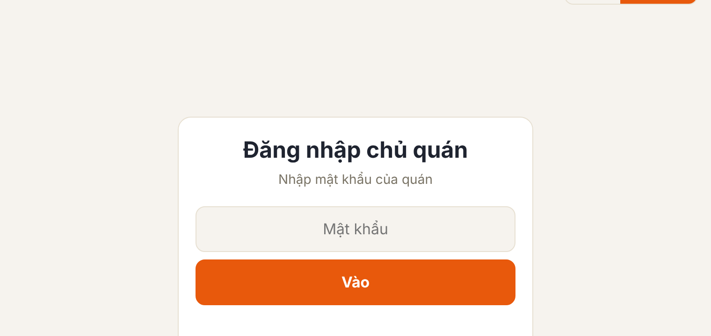
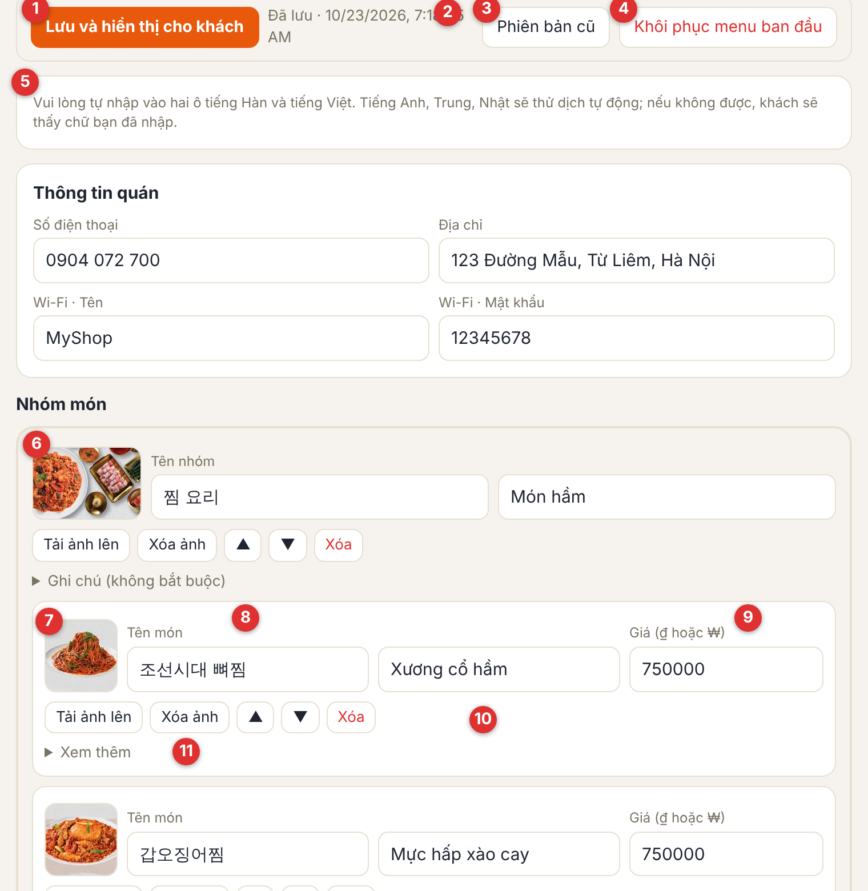
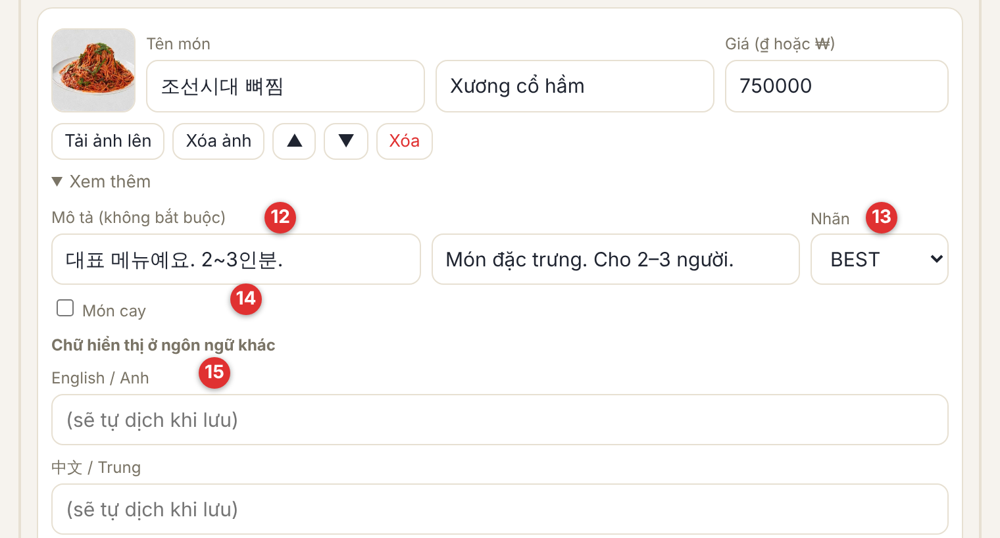

Giá thay đổi? Có món mới? Bạn không cần gọi cho chúng tôi, cứ sửa ngay trên điện thoại hoặc máy tính. Sau khi lưu, màn hình của khách đổi trong khoảng 1 phút.
qrmenuasia.com/owner/?shop=ma-quanChỉ cần sửa con số. Món có nhiều cỡ (nhỏ, vừa, lớn) thì sửa giá từng cỡ.
Tạo món mới, nhóm mới, xóa món không cần nữa và đổi thứ tự bằng ▲▼.
Chọn ảnh trong điện thoại, hệ thống tự thu nhỏ. Có thể thêm ảnh bìa nhóm và ảnh cạnh từng món.
Viết mô tả món, gắn nhãn BEST, Món mới, Đề xuất và nhãn món cay.
Đổi số điện thoại, địa chỉ, Wi-Fi. Nếu nhập Wi-Fi, màn hình khách sẽ có nút "Sao chép".
Lỡ sửa nhầm cũng không sao. Bạn có thể quay về bản đã lưu trước đó hoặc về thực đơn ban đầu.

Số màu đỏ trên ảnh là số của phần giải thích bên cạnh. Mỗi nội dung đều có ô tiếng Hàn và ô tiếng Việt để bạn tự nhập.


| Việc muốn làm | Cách làm |
|---|---|
| Đổi giá | Tìm món, sửa số ở ô Giá (9) → bấm [Lưu và hiển thị cho khách] (1) ở trên cùng. |
| Thêm món mới | Bấm [+ Thêm món] ở cuối nhóm → nhập tên (tiếng Hàn, tiếng Việt) và giá → nếu cần, bấm [Tải ảnh lên] → lưu. Món để trống tên sẽ bị bỏ khi lưu. |
| Xóa món, đổi thứ tự | Bấm [Xóa] của món đó (xác nhận thêm một lần) hoặc ▲▼ → lưu. |
| Tạo nhóm mới | Bấm [+ Thêm nhóm] ở cuối màn hình → nhập Tên nhóm → rồi [+ Thêm món] trong nhóm đó. |
| Tải hoặc đổi ảnh | Bấm [Tải ảnh lên] → chọn ảnh trong điện thoại (tự thu nhỏ khi tải) → lưu. Muốn bỏ ảnh thì bấm [Xóa ảnh]. |
| Báo món mới | [Xem thêm] → chọn Nhãn là Món mới. Khách sẽ thấy nhãn NEW. Món bán chạy chọn BEST, món nên thử chọn Đề xuất. |
| Hôm nay hết món | Ở [Xem thêm], viết "Hôm nay hết món" vào ô Mô tả rồi lưu. Bán lại thì xóa dòng đó. |
| Điện thoại, địa chỉ, Wi-Fi | Sửa ô Thông tin quán ở trên cùng rồi lưu. Nhập tên và mật khẩu Wi-Fi thì cuối màn hình khách có nút sao chép Wi-Fi. |
| Lỡ sửa nhầm | Chưa lưu thì tải lại trang là về như cũ. Đã lưu thì quay lại ở [Phiên bản cũ] (3) hoặc bấm [Khôi phục menu ban đầu] (4). |
Chúng tôi sẽ gửi bạn một link riêng. Mở không cần mật khẩu, xem tốt trên điện thoại, và có thể [In / Lưu PDF].
Số người đã mở thực đơn trong một khoảng thời gian (mặc định 30 ngày). Một người mở nhiều lần trong ngày vẫn tính là 1 người.
Xem ngay số người trung bình mỗi ngày và ngày đông khách nhất.
Mỗi ngày bạn có thể xem khách có tăng sau cuối tuần hay sau sự kiện không.
Khách xem bằng tiếng Hàn, Việt, Anh, Trung hay Nhật. Dùng để biết nên chăm bản dịch nào.
Tỉ lệ khách xem bằng điện thoại và bằng máy tính.
Quét QR trên bàn, hay từ trang tìm quán hoặc tìm kiếm. Bạn có thể cài đặt để không ghi lại lượt xem của chính quán.
Chỉ cần gửi một tấm ảnh cũng được. Chúng tôi có thể sửa giúp bạn.